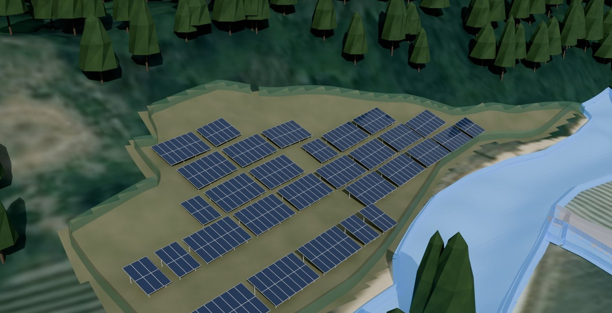

Korea's agrivoltaics act: who can build, where, for how long, and the draft design rules
Act No. 21804 in force 17 December 2026: eligible operators, farmland rules, 30 year cap, draft 30% shading and 2.5 m height, and the yield of a compliant 986 kWp design.
The short answer
From 17 December 2026 Korea has a dedicated agrivoltaics statute, the Act on the Promotion and Support of Agrivoltaic Power Generation Business (Act No. 21804). It limits operators to resident farmers, resident cooperatives and agricultural corporations in renewable energy zones, limits sites to farmland outside agricultural promotion areas or inside renewable energy zones, and caps the permit period at 30 years. Draft design criteria, not yet final, set a shading ratio under 30% and a minimum clearance of 2.5 m.
Until now agrivoltaics in Korea ran on temporary farmland use permits of a few years, which made project finance difficult. The new act, promulgated on 16 June 2026, is the first statute to say who may build an agrivoltaic plant, where, and for how long. For a foreign investor the most important point is the first one: the operator must be a local farmer or a local cooperative, so a foreign party's role is as a supplier, contractor or financing partner, not as the licensee. This note summarises the act and the draft rules, then shows what a compliant layout yields.
The act's Korean title is 영농형 태양광 발전사업의 활성화 및 지원에 관한 법률. We checked the text at the Korean National Law Information Center on 11 November 2026.
What the act fixes
| Question (article) | What the act says |
|---|---|
| Who (Article 5) | A farmer who has lived in the township (eup, myeon or dong) or an adjoining one for the required period and can prove three years of farm management; a cooperative formed by at least 10 residents; an agricultural corporation inside a renewable energy zone |
| Where (Article 6) | Farmland outside agricultural promotion areas, or farmland inside a renewable energy zone. A resident cooperative may use other farmland after consultation with the Ministry of Agriculture, Food and Rural Affairs |
| How long (Article 7) | A period set by the mayor or county head under the enforcement decree, within 30 years from the permit date |
| Permit (Article 8) | Resident consultation, then a permit from the mayor or county head, decided within 30 days of the application excluding consultation periods |
| Farmland (Article 10) | A generation business permit under the act is deemed a temporary farmland use permit |
| Duties (Article 13) | Farm every year according to the farming plan, do not switch to crops that cannot be grown under the structure, keep equipment inspection records |
- A tenant farmer needs the landowner's consent to apply (Article 8), and within the permit period the landowner cannot refuse to renew the lease without just cause (Article 18).
- Cooperatives and agricultural corporations must return part of the revenue to local residents (Article 13(5)).
- No permit under this act can be issued before 17 December 2026. Projects started earlier follow the existing temporary use procedure of the city or county.
The draft design criteria
The enforcement decree and rules were pre announced by the Ministry of Agriculture, Food and Rural Affairs on 16 September 2026 and are not final. The draft contains the numbers a designer needs.
| Item | Draft rule |
|---|---|
| Shading ratio | Under 30%, defined as the horizontal projection of the modules divided by the project site area |
| Minimum height | 2.5 m or more from the farming surface to the structure |
| Support spacing | 4 m or more between support centres |
| Facility footprint | Supports, foundations, inverters and similar within 10% of the site |
| Cultivation | Actual farming on at least 80% of the site every year |
| Not yet set | Area and capacity caps, and the list of crops that may not be grown |
What a compliant layout yields
We designed an agrivoltaic plant of about 1 MW on roughly 4,700 pyeong (about 15,600 m²) of coastal farmland in Jeollanam-do. The design keeps 4 m of clear height under the modules, well above the 2.5 m draft minimum, so tractors and combines pass underneath, and it holds the shading ratio at 29.1%: 4,536 m² of module projection on a 15,588 m² site. The east to west column spacing of about 3.6 m is narrower than the 4 m in the draft, so the array will be re spaced when the rule is final.
| Item | Design on coastal farmland in Jeollanam-do |
|---|---|
| Capacity | 986.40 kWp (4,110 bifacial 240 W modules at 25°) |
| Structure | 4 m clear height, no cut or fill |
| Shading ratio | 29.1% (4,536 m² ÷ 15,588 m²) |
| First year yield | 1,348,644 kWh (PVsyst P50) |
| Specific yield | 1,367 kWh/kWp, 3.75 hours a day on average |
| Performance ratio | 87.0% |

Two things follow from the numbers. The 30% shading ratio forces a sparse array, so the same parcel takes far less capacity than a conventional ground mounted plant. On the other hand, bifacial modules raised 4 m above a bright field pick up enough rear side irradiance that the specific yield does not fall; 1,367 kWh/kWp is at the upper end of what we see on ground mounted plants in the same region. The structural side of the same design, including the column check that only a 3D model caught, is in our note on agrivoltaic structure design.
Why it costs more than a ground mount
- Columns and beams are longer and heavier at 4 m, and the structure takes more wind, so a structural review and foundation pull out tests are part of the design.
- Work at height needs lifting equipment and fall protection such as safety lines and ladders.
- Cost varies widely with height, fixed or tracking structure and the electrical scope, so every site needs its own estimate.
What to do before the act takes effect
- Check on the national land use information service that the parcel is outside an agricultural promotion area.
- Check that the intended operator meets the eligibility in Article 5: a resident farmer, a resident cooperative or an agricultural corporation in a renewable energy zone.
- Check KEPCO's available capacity at the nearest substation and distribution line.
- Read the county ordinance for setbacks and for the resident consultation procedure.
- Draw a layout that meets the draft height and spacing rules and calculate the yield, so the permit application is ready on day one.
The general eligibility and yield summary is also on our page Agrivoltaics in Korea.
If you are planning a project in Korea and want this check done on your site, email the drawings or the parcel list to info@ecokkorea.co.kr. We reply with the scope and schedule first.
Sources: Act on the Promotion and Support of Agrivoltaic Power Generation Business, Act No. 21804, promulgated 16 June 2026, in force 17 December 2026 (Korean National Law Information Center, checked 11 November 2026); draft enforcement decree and rules pre announced by the Ministry of Agriculture, Food and Rural Affairs on 16 September 2026; the company's PVsyst design for a project of about 1 MW in Jeollanam-do, design stage. Draft figures may change when the decree is promulgated; check the final text before applying.
More insights
- Korean solar permitting setback rules explained
- How we size ESS for peak shaving with 15 minute data
- PVsyst vs Solar Pro cross-check on a 619 kWp roof
- Agrivoltaic structure design basics
- Electrical BOQ and quantity take-off workflow
- Korea industrial electricity tariff 2026: rates, demand charges and a worked bill
- Solar permitting in Korea: the seven steps, statutory periods and a real timeline
- Net metering in Korea: the Article 18 rules and what changes on the bill
- Peak shaving ESS payback in Korea: a worked example with 2026 tariffs
- P50 and P90 for solar in Korea: how we build a bankable yield estimate
- BESS feasibility study in Korea: what a bankable analysis contains and how we cross check it
- Rooftop solar structural review in Korea: loads, anchors, reinforcement and the permits that follow
- Fire alarm and telecom design and BOQ in Korea: separate contracts, detector counts and the quantities that get missed
- Solar project timeline in Korea: how long each stage really takes, from license to commercial operation